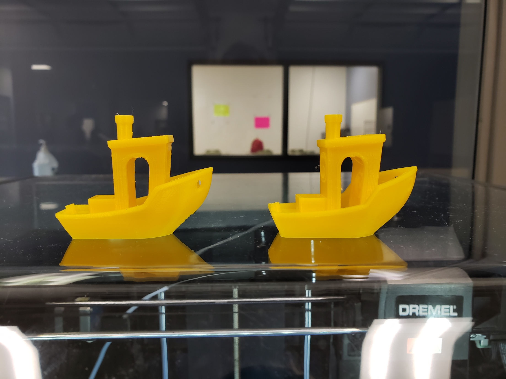
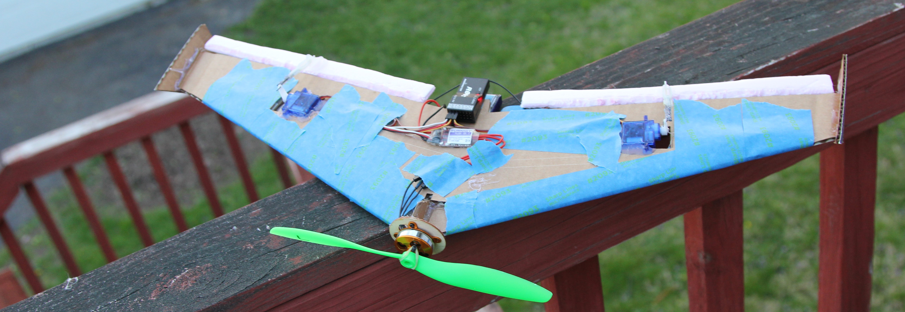

Greatest Growth Statement
My greatest growth since joining DRSS does not have anything to do with a specific skill I’ve learned, but the act of learning itself. At the beginning of high school, I started learning a video editing software. It took me about a week to figure out the features I needed to use to make a video of an acceptable quality. About 1 year ago in 11th grade, I was given a similar assignment using a different video production software. The time frame was much shorter and I was much busier that week, so the time between first opening the software and submitting the final product was less than 24 hours. The software in this case was much more complex, and my final product was considered exceptional. You never know what things you’ll have to adapt to, so I believe this ability will be very relevant to me in the future.
Artifact 1: NKVD Ad
My History as a Very Professional Salesman
The NKVD ad was the first time I put a significant amount of effort into a video that was not for school. I had made similar videos before, though they were for a grade in my government class. That class was taught by one of my favorite teachers: Mr. Nunez. School was completely virtual for the first half of that year, and one of the many ways he kept the students’ attention was student-made commercials punctuating sections of his classes. The requirements were:
- Advertise a fictional good or service by giving a presentation or playing a video
- Keep it under one minute
I made two of these, both in the form of videos. I enjoyed making both of these very much, and my classmates seemed to enjoy watching them.
Another Dimension of Difficulty
From a technical standpoint, both of these were very simple. They were just images being moved around on screen; the real effort was in the writing. But I wanted to get a little bit more ambitious with my visuals, so I picked up a 3D program called Blender that can do all kinds of graphics related tasks. I originally chose Blender because it was free, but despite its price Blender is a very capable software. However, making 3D graphics has a very steep learning curve.
There are easily hundreds if not thousands of buttons that must be pressed, sliders that must be adjusted and other little actions that must be taken in order to make even a simple 3D scene. For every time you have to navigate through dropdowns in dropdowns or scroll through lists of parameters, those are seconds being used to do something other than the task at hand. Now, a few seconds wasted is no big deal for most tasks, but when you spend a few seconds on something thousands of times, seconds add up into minutes, and minutes into hours. To take all the actions that must be taken to make a 3D scene in such a time-consuming manner would make work go at a snail’s pace. In fact, work did go at a snail’s pace for the first month or so of me using blender. It was like typing by clicking buttons on a screen instead of pressing actual buttons with your fingers. Then I finally bothered to look up a beginner’s tutorial, and found out how heavily Blender uses hotkeys and macros. Rather than wasting time navigating dropdowns or whatnot, you simply make a few keystrokes.
Say I wanted to move an object to the right a bit. let’s also say that “right” in this case happens to be along the X axis. Where I to do this without the use of hotkeys, I would to mouse over to the left side of the screen to select the move tool, then mouse back over to the object I want to move, select it, and then drag the X arrow until I have the position I want. It takes about 2 seconds to get to the part where I’m actually manipulating the object. Using hotkeys, I select the object, press G for grab, and then X to lock it to the X axis. This takes about half a second, 400% faster than using a mouse to do everything. Not only did hotkeys make me much faster, but some features of blender are only accessible through them. The problem with hotkeys is that you have to learn them. This took (and is still taking me) a very long time. In some ways, it’s like learning to type all over again.
Why This Whole Thing was Pretty Dumb
Despite the speed gained by using hotkeys, progress was made at a significantly slower rate with blender than with 2D visuals. Animations were more complex, I had to use 3D models instead of simple images, and some segments would take a long time to render. The visuals for the NKVD ad took about 140 hours of work spread across 3 months. And let’s not forget, this video is less than 2 minutes long.
That might seem insane, but the effort that goes into a video is not proportional to its length. Industry professionals gauge the amount of work a video will be in the number of shots in the video. This because most of the work that goes into a shot is gathering assets, getting the lighting right, framing the camera, all things that you only have to do once per shot. Taking a 2 second shot and stretching it out to be 2 minutes is only a matter of animation, which is very easy when your assets are rigid objects. But when each shot is less than 10 seconds long, things can take forever, even with 2D animation.
This was probably my most ambitious video project that I actually got done. But was it worth all the effort? When looking at what I put in vs what I got out, no. Absolutely not. I could have made the video using good old 2D and it would have been just as funny and entertaining. With high production value being put into almost every piece of commercial media, most people are numb to increases in visual fidelity that don’t absolutely blow their minds.
Though, with that being said, I did get a pretty firm grasp of the basics of Blender. Blender’s extreme versatility makes it a very useful software to know and I have used it to great effect in a few school projects recently. I think the most valuable thing I got out of the 3D production process was not the final video, but the knowledge of how to make one.
Artifact 2: Dear Data
A Kinda Boring First Week
As the name of this project suggests, this project involves some data. We all chose something about our personal lives to study and recorded data on it for the first week of the project. I studied my work habits for the ACT practices done for the class, recording deadlines, planned progress and actual progress. The data wound up being pretty boring on its own, so I knew I would have to make up for that with the visualization.
The Fun Begins
If you’re reading this, it’s safe to say that you’ve read artifact one. I did what I did because I like good visuals, both when viewing them and when making them. I didn’t have to make my visualization be 3D and all that fancy stuff, but I did anyway because it’s fun.
I had been experimenting with mesh modifiers before doing this project, and I had been itching to use them on something. Mesh modifiers are a feature in Blender that let you do all kinds of interesting things to a 3D model. You can distort them, multiply them, smooth them, all kinds of stuff. But the one I used for this project was a Boolean, which can be used to add or subtract one mesh from another.
I started off by making 3 hemispheres, assigning each one a unique material and putting them each inside each other. Then I used that Boolean modifier I was talking about to make sure that the hemispheres weren’t clipping into each other, as that would cause issues with transparent materials. Then copied that a few times and animated everything to match the data.
Next up was the materials. These were the most important to achieving a good look as the scene is just a bunch of basic shapes without all the bright colors and fancy ray-traced effects. All the materials were done procedurally using Blender’s shader nodes. For those of you who don’t speak nerd, I made them by telling the computer to do a bunch of math. I started with the environment shader that makes up the starry night sky in the background. With a combination of clouds and stars, it’s probably the single most complicated material in the whole project. To make the clouds I scaled up some noise, gave it a purple-ish color and wrangled it to onto the top half of the sky using some vector math. For the stars I made a grid of white points and then scrambled their positions a bit, then made a filter that takes a small fraction of the dots and makes them super bright. Then I combined the two to make the finished product.
That might not sound that complicated, but there’s tons of experimentation and tweaking that goes into making even the simplest of materials. For example, when I say “some noise”, there are multiple different noise generators, each with at least 5 variables that can be used to determine how they look. I had to go through all of these and play around with the settings until I found one that was distinctly cloud-like. Then you have to repeat the process for the colors. How bright are the colors? How much do they vary cloud to cloud? How much do they light the objects in the scene? These are all questions asked indirectly by the creative process, and a single wrong answer sticks out like a sore thumb.
The materials for the data elements use something called camera coordinates. Typically, a material uses object or world coordinates that make the material look different from area to area. By using camera coordinates, patters and such stay fixed in the same part of the screen as they are relative to the camera rather than being relative to the environment. Watch the line and dot patterns closely and you’ll see what I’m talking about. I used the same material on all of the data-related stuff, changing around colors, patterns and sometimes giving them a frosted glass material.
Once that was done, I finished up the animation with some ruler-like markings below the data elements and a floor material with a kind of waxy, automotive look to it. All in all, I really liked how this turned out. Again, refencing artifact 1, this whole thing was one shot, one environment. No complex models, no voice lines, no sound effects, all make for an easy workflow. Albeit, if I really wanted this to be easy, I would have stuck to drawing it on paper like everyone else, but where’s the fun in that?
Artifact 3: CSS Skills
Humble Beginnings
When I made my first website, it was for my STEM foundations class in 7th grade. Previously, students had made their websites using WIX, a free website building tool. But DRSS was trying something new with the class of 2022; they were going to have us make our websites by manually writing the code. Me and all the other 7th graders were very confused with all this, as none of us had any prior experience with web development. That first year was pretty rough. We had a list of requirements we had to meet, and “make your website look good” was not on it. My website wound up looking like a pile of bright green vomit with Times New Roman shaped chunks in it, but nobody else’s was much better.
The next year was a mild improvement. I had figured out how to change the font and most of the code was stuff I wrote myself. I also switched up the color pallet to consist of light and dark purple-ish blues, improving the viewing experience to be tolerable for short periods of time. The main area of growth this year was my knowledge of what it was that I was doing. I no longer had to go copy and paste code for everything I was doing, which is a necessary step towards being proficient.
9th grade was another small improvement. I started from scratch with my website, though I didn’t learn any major new skills as the time I could spend on the project was limited. I gave the site a darker color palette and spent more time on animations. While this one was slightly less technically impressive, it was much more usable than previous ones because of its relative polish.
10th Grade Glow-Up
I’m not sure what possessed me that year, but I went all out on my 10th grade website. I regressed back to my old practice of copying and pasting code, though this time it was different. Rather than swindling code from education-oriented resources, this time the design focused code sharing platform Code Pen was the subject of my plunders. Though I had a somewhat comprehensive understanding of HTML and CSS, JavaScript was something completely foreign to me. JavaScript, however, is the key to making truly impressive websites. For a while, I browsed around the site in awe. This is where bored developers come to either build a portfolio, or to let off some creative steam and make some over-the-top website element that would be too distracting and out of place on any practical website.
I made a new folder called “10th portfolio”, opened an empty HTML file and got to work. I mixed and matched tons of navigation bars, content systems, slideshows and the like. I wasn’t able to do too much code copying as things would start to conflict with each other in ways I had no clue how to fix, but with a lot of troubleshooting and experimentation, I had a pretty high caliber website on my hands. Not exactly what I would call professional quality, but it stood out among those from my grade to be sure.
But in some ways, I was back to square one. Just like in 7th grade, I had next to no idea how most of my site worked. Whenever I ran into an issue online forums had no answer to, it was usually easier to undo whatever it was I did to cause the issue and find another way. I was able to work around this while everything was still fresh in my mind, but this proved to be a major problem later on.
Karma
When the time came to add my 11th grade content to the site, I remembered why I stopped copying code. Adding content and making changes was an absolute nightmare, and I swore I would never build a site like this again. I had made no effort to make it easy to add content to the site, and there was a lot of manual work that had to go into making the site look right. This marked the first time I didn’t have to completely remake my website, though I knew next year was going to be different.
Doing it Right
This year I started fresh for hopefully the final time in a while. All the code for this site is completely original (except for some JavaScript), and making additions to it is easier than ever. I’ve learned about more advanced CSS selectors, pseudo-elements and CSS variables. The advanced selectors let me do things like the light/dark pattern on the sections on this website completely automatically, where last year I had to manually switch the colors by editing the HTML. Pseudo-elements let me do things like the rounded corners on the sections with no additional HTML. CSS variables let me define things like colors and fonts in just one spot, removing the need to go through and specify the same color for 50 different things whenever I’m playing with the color pallet.
I’ve also gotten a bit more comfortable with JavaScript, having gotten to the point where I can at least tweak existing code to my liking. I’ve recently been made aware of things like React and Angular, though I have yet to actually use them in a website. I’ve considered doing something with WebGL, though I’m not entirely sure what that would look like.
Artifact 4: 3D Printer Tuning
Sub-title
All FDM 3D printers are fundamentally the same. You have an extruder that spits out hot plastic onto a surface, usually accompanied by a fan to cool down the plastic once it has exited the nozzle. However, each printer has unique quirks in the way that it does these things that must be accounted for when generating toolpaths.
This Ain’t My First Rodeo
My first printer was the 101 Hero. I was somewhat shielded from the process of tuning it’s print settings though, as I used a pirated version of Simplify3D. Simplify3D, as the name suggests, simplifies the 3D printing workflow by having premade profiles for most commercial printers. Later on, I got a better printer called the Anet A8. By this time, I had switched to using CURA, which requires that you make custom profiles from scratch for anything other than an Ultimaker printer. The A8 is less of a printer and more of a DIY kit. Each one is slightly different, as everyone messes up the build process in their own unique way. I didn’t document the tuning process, but I do know that it took upwards of 20 test prints to get things working properly.
New Stuff
This year, DRSS got some new printers for our makerspace. They are Dremel 3D45s, and they are significantly better than the MakerBot Replicator plus and Z18 printers we’ve been stuck with for the last few years. Dremel attempted to supply an easy way to slice models for the printers by making some modifications to a version of CURA from 2013. Having come to this from the incredibly powerful PrusaSlicer, this was not going to do. I got PrusaSlicer installed on my school laptop and got to work on figuring out what makes the 3D45 tick.
The whole process took me 5 test prints, much less than with any of the other printers I had tuned prior. There were also a few failed attempts at the very beginning, which will be documented here as well.
Failed Attempt 1
I started off by plugging the 3D45’s build volume into PrusaSlicer and setting the G code flavor to Marlin. I looked at a pre-sliced file on a flash drive that came with the printers and copied the initialization and completion commands into PrusaSlicer as well. I loaded in a benchy boat and sliced it with everything else at default.
When I ran the G code, it successfully homed itself, heated up and then promptly rammed the print head into the rear right corner.
Failed Attempt 2
The failure of attempt 1 was caused by the 3D45 using the center of the build plate as the origin point. This is usually only done by delta printers as that is where the print head is once they finish homing, but as I said before, each printer has its quirks. In PrusaSlicer, I moved the origin point to the center of the bed and tried again.
This time it started to make a first layer, but the default settings were not made with a glass print bed in mind. The print head was moving too fast and the sharp point of the hull at the front caused the line to peel up. I stopped the print before it made a mess.
Test Print 1
I started off with the first layer settings. I put a glass bed on my A8, so I had a pretty good idea on how to make this work. I cranked up the first layer extrusion width to 1mm and turned the speed down to 5 mm/s. I also configured the Dremel PLA material with a first layer temperature of 230C, a print temperature of 215C and a bed temperature of 60C. I know 230 is pretty hot for PLA, but the PLA temperature default on the machine was 230C so I figured the Dremel PLA needed higher temperatures for some reason. I wanted quick results so I upped the layer height to 0.3mm.
This yielded a pretty good benchy, especially for a first print. Everything was looking great for a 0.3mm layer height print except for the overhang on the hull.
Test Print 2
My main focus was the overhang issue. We had run a pre-sliced print of a frog with a much more extreme overhang on its stomach, so I knew this was a cooling issue and not a limitation of the extruder. I found a setting on the machine itself that was overriding the G code temperature and cooling settings, which I disabled on all printers. I also told PrusaSlicer to max out the fan speed after layer 3, and increased the print speed a bit.
This one was very similar to the previous one, maybe a bit worse on the overhang.
Test Print 3
So, test 2 was a step back in quality. I’m guessing the fan was already running at full tilt with test 1, meaning that the 3D45’s print cooling solution is pretty lame considering its price. The worsening of the problem most likely came from the increase in speed. I lowered the layer height and decreased the speed for outer perimeters. The lower layer height will decrease the amount of thermal mass that has to be cooled, and the slower perimeter speed will make the fan spend more time blowing on the area.
Artifact 5: Airplane Project
Click the image above to be directed to the artifact on my 11th grade page.